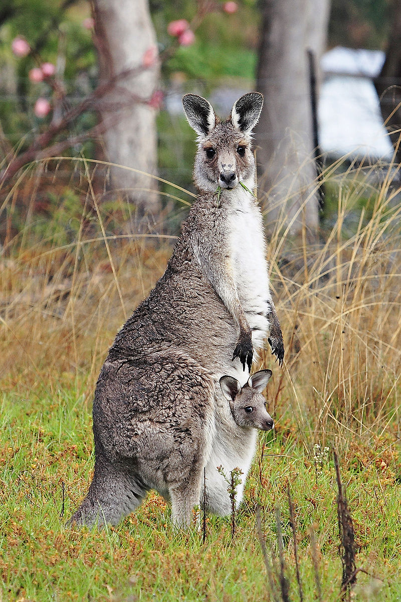

The kangaroo is a marsupial from the family Macropodidae (macropods, meaning "large foot"). In common use the term is used to describe the largest species from this family, especially those of the genus Macropus: the red kangaroo, antilopine kangaroo, eastern grey kangaroo, and western grey kangaroo.[1] Kangaroos are indigenous to Australia. The Australian government estimates that 34.3 million kangaroos lived within the commercial harvest areas of Australia in 2011, up from 25.1 million one year earlier.[2]
As with the terms "wallaroo" and "wallaby", "kangaroo" refers to a polyphyletic grouping of species. All three refer to members of the same taxonomic family, Macropodidae, and are distinguished according to size. The largest species in the family are called "kangaroos" and the smallest are generally called "wallabies". The term "wallaroos" refers to species of an intermediate size.[3] There is also the tree-kangaroo, another genus of macropod, which inhabits the tropical rainforests of New Guinea, far northeastern Queensland and some of the islands in the region. A general idea of the relative size of these informal terms could be:
Kangaroos have large, powerful hind legs, large feet adapted for leaping, a long muscular tail for balance, and a small head. Like most marsupials, female kangaroos have a pouch called a marsupium in which joeys complete postnatal development.
The large kangaroos have adapted much better than the smaller macropods to land clearing for pastoral agriculture and habitat changes brought to the Australian landscape by humans. Many of the smaller species are rare and endangered, while kangaroos are relatively plentiful.
The kangaroo is a symbol of Australia and appears on the Australian coat of arms[4] and on some of its currency[5] and is used by some of Australia's well known organisations, including Qantas[6] and the Royal Australian Air Force.[7] The kangaroo is important to both Australian culture and the national image, and consequently there are numerous popular culture references.
Wild kangaroos are shot for meat, leather hides, and to protect grazing land.[8] Although controversial, kangaroo meat has perceived health benefits for human consumption compared with traditional meats due to the low level of fat on kangaroos.[9]